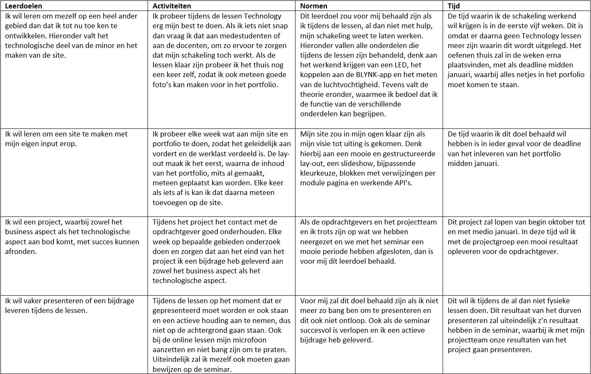
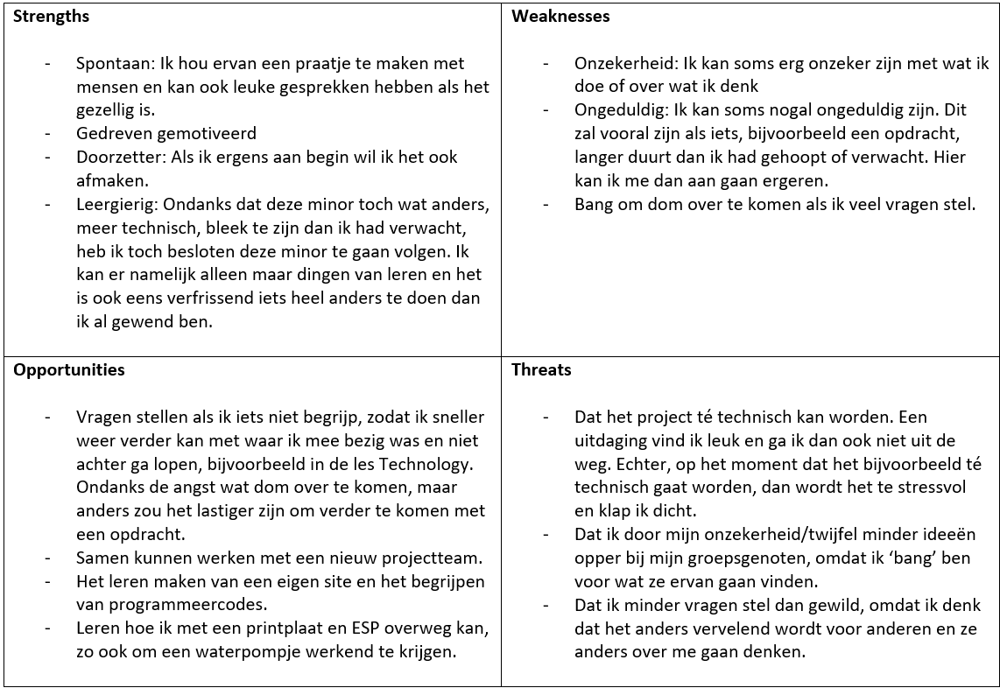

Persoonlijke leerdoelen en SWOT-analyse
Tijdens deze minor wordt ook aandacht besteed aan je persoonlijke ontwikkeling. Om de aandachtspunten van mezelf naar voren te brengen, heb ik mijn persoonlijke leerdoelen opgesteld en een SWOT-analyse over mezelf gemaakt.
Doelen
Leerdoelen
Mijn persoonlijke leerdoelen heb ik geformuleerd aan de hand van activiteiten, normen en de tijd waarin ik mijn doelen wil gaan behalen.

Reflectie
SWOT-analyse
In deze persoonlijke SWOT-analyse worden mijn sterktes en zwaktes beschreven. Aan de hand van deze factoren worden de kansen waar ik gebruik van zou kunnen maken en de bedreigingen welke er op mijn pad kunnen komen toegelicht.

Ga terug naar 'Smart Start' Ga terug naar vorige pagina Ga naar volgende pagina